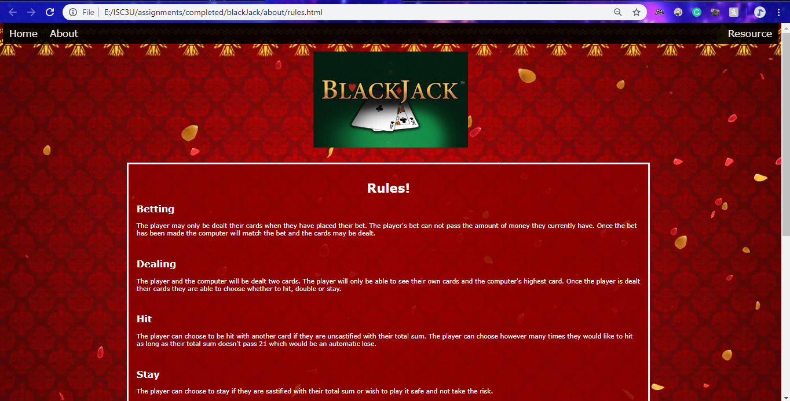
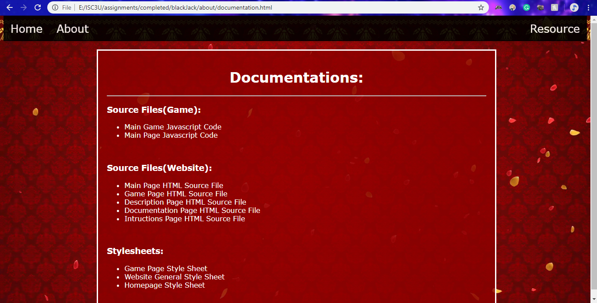

Instructions/Screenshots
Homepage
This was the very first page you saw when you clicked on our webpage. On this page, you can click "Play" to play our game. Read other information about the details of our game in about and view resources, and don't forget to turn on or off the music!
Instructions and Screenshots
On this very page that you are currently viewing, you can read up the instructions on how to play our game "Black Jack" and how to navigate our website (with the help of screenshots).
Description
This page is dedicated to a description of what Black Jack is.

Rules
On this page you can read up about all the rules on how to play Black Jack.

Documentation
Within this page you can find the source files for our game and website as well as the stylesheets that were used to style our pages.
Resources
This page holds all the resources that we have used.
The Game

General Knowledge
This is what you will see when you choose to click play. On the bottom we have a bar where you can see your total balance, input a bet and turn on or off the music. To the right the player has buttons where they will be able to make their choices from. Finally a little off to the left side from the middle are the Dealer's point total and cards as well as the Player's point total and cards.
Betting
As you can see currently the bet button is not present. The bet button will only become visible once the user has placed a bet that is greater or equal to 1.
Now that the bet has been placed the button has now appeared. Notice that the bet button is a lighter colour than the other buttons. This indicates that the bet button is the only button that is able to be clicked.
Dealing
Once the bet button has been pressed, the amount of money the player has bet will be subtracted off their balance. The deal button now becomes available. The bet button is no longer able to be pressed and the bet value can no longer be changed.
Choice
Once the player has pressed the deal button, the player's cards will be shown as well as their point total. Only one of the dealer's cards will be shown, that card being the greatest out of the two. The player then has a choice to "Hit", "Stay", or "Double". The deal button is also unable to be pressed.
Hit
The player is able to click the hit button as many times as they like as long as their total points remain under or equal to 21 (otherwise the player loses due to bust).
Double
If the player is feeling confident they may choose to double their orginal bet. The player can only double their bet once.
Stay (win scenario)
When the player clicks stay the player will either win, lose or tie. If the player wins they recieve the amount that they had bet.
Stay (lose scenario)
If the player loses they do not gain any money and do not get their bet money back.
Stay (tie scenario)
If the player ties with the dealer then the player will recieve their bet money back.

Player Bust
The player losing by bust scenario is when the player clicks the hit button and it causes the player's point total to exceed 21. The player loses so they do not earn any money or get their bet money back.
Dealer Bust
The dealer bust is when the player clicks stay and the dealer's point total exceeds 21 causing the player to win. The player will recieve the money they have won from their bet.
Game Over
When the balance has no more money the player is unable to bet anymore therefore the game is over. The player may choose to play again by clicking the play again button.
???
Up? Up? Down? Down? Left? Right? Left? Right? B? A?